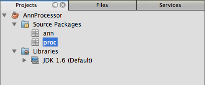
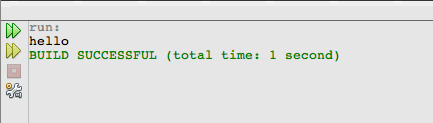

Apache NetBeans
Apache NetBeansLatest release
NetBeans IDEでの注釈プロセッサのサポート、パートII: IDEでの独自のカスタム注釈プロセッサの使用
| This tutorial needs a review. You can open a JIRA issue, or edit it in GitHub following these contribution guidelines. |
執筆: Jesse Glick、執筆および管理: Irina Filippova
-
IDEでの独自のカスタム注釈プロセッサの使用

Figure 1. このページの内容は、NetBeans IDE 7.0、7.1、7.2および7.3に適用されます
チュートリアルのこの項では、ユーザーが自身で記述したカスタム注釈プロセッサをIDEのプロジェクトに追加する方法を学習します。このチュートリアルでは注釈プロセッサの記述方法については扱いません。NetBeans IDEプロジェクトに追加する方法を説明します。
この項で使用されているサンプル・アプリケーションはJesse Glick氏によって作成され、以前のIDEリリースのFAQエントリとして公開されました。
例として使用されている注釈プロセッサは、注釈付きクラスの親クラスを生成します。生成された親クラスには、注釈付きクラスからコールされるメソッドも含まれています。次の手順に従って、カスタム注釈プロセッサを作成し、IDEのプロジェクトに追加します。
このチュートリアルを完了するには、次のソフトウェアとリソースが必要です。
| ソフトウェアまたはリソース | 必須バージョン |
|---|---|
7.0, 7.1, 7.2, 7.3 |
|
バージョン6または7 |
|
v1.12.4以降 |
注釈の定義および注釈プロセッサの作成
この課題では、クラス・ライブラリ・プロジェクトを作成します。
-
「ファイル」>「新規プロジェクト」を選択し、「Java」カテゴリで「Javaクラス・ライブラリ」プロジェクト・タイプを選択します。「次」をクリックします。
-
「プロジェクト名」として*
「AnnProcessor」*と入力し、プロジェクトの場所を指定します。「終了」をクリックします。
「終了」をクリックすると、IDEによってクラス・ライブラリ・プロジェクトが作成され、そのプロジェクトが「プロジェクト」ウィンドウに表示されます。
-
「プロジェクト」ウィンドウで「AnnProcessor」プロジェクト・ノードを右クリックし、「プロパティ」を選択します。
-
「ソース」カテゴリで、ソース/バイナリ形式としてJDK 6またはJDK 7が指定されていることを確認します。
-
「ライブラリ」タブを選択し、「Javaプラットフォーム」がJDK 1.6またはJDK 1.7またはに設定されていることを確認します。「OK」をクリックして、「プロジェクト・プロパティ」ウィンドウを閉じます。
この課題では、2つのJavaパッケージを作成し、各パッケージ内に1つのJavaクラスを作成します。
-
「AnnProcessor」プロジェクト・ノードで「ソース・パッケージ」ノードを右クリックし、「新規」>「Javaパッケージ」を選択します。
-
パッケージ名に*
「ann」*と入力して「終了」をクリックし、新しいJavaパッケージを作成します。 -
前の2つのステップを繰り返して*
proc*という名前のJavaパッケージを作成します。
2つのJavaパッケージを作成すると、プロジェクトの構造は次のイメージのようになるはずです。

Figure 2. 注釈プロセッサのプロジェクトの構造。
-
「
ann」Javaパッケージを右クリックし、「新規」>「Javaクラス」を選択します。 -
「クラス名」に「*
Handleable*」と入力します。「終了」をクリックします。 -
新しい
Handleable.javaファイルを編集して、次の変更を加えます。ファイルを保存します。
package ann;
public *@interface* Handleable {
}これは注釈を宣言するための方法であり、インタフェースの宣言と非常によく似ています。異なるのは、 interface キーワードの前に at 記号(@)が必要であることです。この注釈は Handleable と呼ばれます。
*追加情報: *注釈宣言では、注釈を付けることができる要素のタイプ(例: クラス、メソッド)などの追加のパラメータを指定することもできます。これを行うには、 @Target(value = {ElementType.TYPE}) (クラスの場合)および @Target(value = {ElementType.METHOD}) を追加します。つまり、注釈宣言は、自身に_meta-annotations_で注釈が付けられます。
ここで、 Handleable 注釈を処理する注釈プロセッサのコードを追加する必要があります。
-
「*
proc*」Javaパッケージを右クリックし、「新規」>「Javaクラス」を選択します。 -
「クラス名」に「*
HandleableProcessor*」と入力します。「終了」をクリックします。 -
HandleableProcessor.javaクラスを変更して次のコードを追加します。変更を保存します。
注意: @SupportedSourceVersion (太字)の値は使用しているJDKのバージョンによって異なり、 (SourceVersion.RELEASE_7) または (SourceVersion.RELEASE_6) になります。
package proc;
import ann.Handleable;
import java.io.IOException;
import java.io.PrintWriter;
import java.io.Writer;
import java.util.Set;
import javax.annotation.processing.AbstractProcessor;
import javax.annotation.processing.RoundEnvironment;
import javax.annotation.processing.SupportedAnnotationTypes;
import javax.annotation.processing.SupportedSourceVersion;
import javax.lang.model.SourceVersion;
import javax.lang.model.element.Element;
import javax.lang.model.element.ElementKind;
import javax.lang.model.element.TypeElement;
import javax.lang.model.type.TypeMirror;
import javax.tools.Diagnostic;
import javax.tools.JavaFileObject;
@SupportedAnnotationTypes("ann.Handleable")
@SupportedSourceVersion(*SourceVersion.RELEASE_7*)
public class HandleableProcessor extends AbstractProcessor {
/** public for ServiceLoader */
public HandleableProcessor() {
}
public boolean process(Set<? extends TypeElement> annotations,
RoundEnvironment roundEnv) {
for (Element e : roundEnv.getElementsAnnotatedWith(Handleable.class)) {
if (e.getKind() != ElementKind.FIELD) {
processingEnv.getMessager().printMessage(
Diagnostic.Kind.WARNING,
"Not a field", e);
continue;
}
String name = capitalize(e.getSimpleName().toString());
TypeElement clazz = (TypeElement) e.getEnclosingElement();
try {
JavaFileObject f = processingEnv.getFiler().
createSourceFile(clazz.getQualifiedName() + "Extras");
processingEnv.getMessager().printMessage(Diagnostic.Kind.NOTE,
"Creating " + f.toUri());
Writer w = f.openWriter();
try {
PrintWriter pw = new PrintWriter(w);
pw.println("package "
+ clazz.getEnclosingElement().getSimpleName() + ";");
pw.println("public abstract class "
+ clazz.getSimpleName() + "Extras {");
pw.println(" protected " + clazz.getSimpleName()
+ "Extras() {}");
TypeMirror type = e.asType();
pw.println(" /** Handle something. */");
pw.println(" protected final void handle" + name
+ "(" + type + " value) {");
pw.println(" System.out.println(value);");
pw.println(" }");
pw.println("}");
pw.flush();
} finally {
w.close();
}
} catch (IOException x) {
processingEnv.getMessager().printMessage(Diagnostic.Kind.ERROR,
x.toString());
}
}
return true;
}
private static String capitalize(String name) {
char[] c = name.toCharArray();
c[0] = Character.toUpperCase(c[0]);
return new String(c);
}
}ここで、注釈プロセッサのコードを構成する主要な部分について少し詳しく見てみます(便宜上、コードの一部しか示されていないことに注意してください)。
最初に、注釈プロセッサでサポートされている注釈型( @SupportedAnnotationTypes を使用)と、サポートされているソース・ファイルのバージョン( @SupportedSourceVersion を使用。この場合のバージョンはJDK 6)を指定します。
@SupportedAnnotationTypes("ann.Handleable")
@SupportedSourceVersion(SourceVersion.RELEASE_6)次に、 javax.annotation.processing パッケージの AbstractProcessor クラスを拡張する、このプロセッサのための公開クラスを宣言します。 AbstractProcessor は、注釈を処理するために必要なメソッドを含む、具象注釈プロセッサの標準スーパー・クラスです。
public class HandleableProcessor extends AbstractProcessor {
...
}ここで、このクラスのpublicコンストラクタを指定する必要があります。
public class HandleableProcessor extends AbstractProcessor {
* public HandleableProcessor() {
}*
...
}次に、親 AbstractProcessor クラスの process ()メソッドをコールします。このメソッドを通して、処理対象の注釈が提供されます。また、このメソッドには、処理のラウンドについての情報も含まれています。
public class HandleableProcessor extends AbstractProcessor {*
*...
* public boolean process(Set<? extends TypeElement> annotations,
RoundEnvironment roundEnv) {
...
}
*
}注釈プロセッサのロジックは、 AbstractProcessor クラスの process() メソッド内に含まれています。 AbstractProcessor を通して ProcessingEnvironment のインタフェースにもアクセスすることにより、注釈プロセッサはFiler(注釈プロセッサが新しいファイルを作成できるようになるファイラ・ハンドラ)やMessager(注釈プロセッサがエラーを報告する手段)のような複数の便利な機能を使用できるようになります。
public class HandleableProcessor extends AbstractProcessor {*
*...
public boolean process(Set<? extends TypeElement> annotations,
RoundEnvironment roundEnv) {//For each element annotated with the Handleable annotation
*for (Element e : roundEnv.getElementsAnnotatedWith(Handleable.class)) {
*//Check if the type of the annotated element is not a field. If yes, return a warning*.
if (e.getKind() != ElementKind.FIELD) {
processingEnv.getMessager().printMessage(
Diagnostic.Kind.WARNING,
"Not a field", e);
continue;
}
*//Define the following variables: name and clazz*.**
String name = capitalize(e.getSimpleName().toString());
TypeElement clazz = (TypeElement) e.getEnclosingElement();
*//Generate a source file with a specified class name. *
try {
JavaFileObject f = processingEnv.getFiler().
createSourceFile(clazz.getQualifiedName() + "Extras");
processingEnv.getMessager().printMessage(Diagnostic.Kind.NOTE,
"Creating " + f.toUri());
Writer w = f.openWriter();
*//Add the content to the newly generated file*.
try {
PrintWriter pw = new PrintWriter(w);
pw.println("package "
+ clazz.getEnclosingElement().getSimpleName() + ";");
pw.println("public abstract class "
+ clazz.getSimpleName() + "Extras {");
pw.println(" protected " + clazz.getSimpleName()
+ "Extras() {}");
TypeMirror type = e.asType();
pw.println(" /** Handle something. */");
pw.println(" protected final void handle" + name
+ "(" + type + " value) {");
pw.println(" System.out.println(value);");
pw.println(" }");
pw.println("}");
pw.flush();
} finally {
w.close();
}
} catch (IOException x) {
processingEnv.getMessager().printMessage(Diagnostic.Kind.ERROR,
x.toString());
}
}*return true;
* }*
...
}このコードの最後のブロックでは、注釈付き要素の名前を大文字にするために使用される capitalize メソッドを宣言しています。
public class HandleableProcessor extends AbstractProcessor {*
*...*
private static String capitalize(String name) {
char[] c = name.toCharArray();
c[0] = Character.toUpperCase(c[0]);
return new String(c);
}
*}-
「
AnnProcessor」プロジェクトを右クリックし、「ビルド」を選択することによってプロジェクトをビルドします。
IDEでの注釈プロセッサの使用
この項では、注釈プロセッサが使用されるJavaアプリケーション・プロジェクトを作成します。
-
「ファイル」>「新規プロジェクト」を選択し、「Java」カテゴリで「Javaアプリケーション」プロジェクト・タイプを選択します。「次」をクリックします。
-
名前と場所ページで、「プロジェクト名」として*
「Demo」*と入力し、プロジェクトの場所を指定します。 -
「メイン・クラスの作成」フィールドに「*
demo.Main*」と入力します。「終了」をクリックします。

Figure 3. 新規プロジェクト・ウィザードでのDemoプロジェクトの作成。
-
「プロジェクト・プロパティ」ウィンドウを開き、「ソース」パネルでソース/バイナリ形式としてJDK 6またはJDK 7が選択されていること、および「ライブラリ」パネルで「Javaプラットフォーム」がJDK 1.6またはJDK 1.7に設定されていることを確認します。
-
Main.javaクラスを変更して次のコードを追加します。変更を保存します。
package demo;
*import ann.Handleable;*
public class Main *extends MainExtras* {
*@Handleable
private String stuff;*
*public static void main(String[] args) {
new Main().handleStuff("hello");
}*
}このコードには、次の要素が含まれています。
-
カスタム注釈プロセッサ
ann.Handleableのインポート文 -
MainExtrasクラスを拡張する公開クラスMain(MainExtrasは、コンパイル中にこの注釈プロセッサによって生成される) -
@Handleable注釈が付いているstuffという名前のprivateフィールド -
自動的に生成された
MainExtrasクラスで宣言されている、handleStuffメソッドをコールするmainメソッド
この単純な例では、 handleStuff メソッドは現在の値の出力のみを行います。他のタスクを行うように、このメソッドを変更できます。
``Main.java`` コードを保存した後、IDEによって複数のコンパイル・エラーが報告されたことが表示されます。これは、まだこのプロジェクトに注釈プロセッサが追加されていないためです。
-
「プロジェクト・プロパティ」ウィンドウで
「Demo」プロジェクト・ノードを右クリックし、「プロパティ」を選択した後、「プロパティ」ウィンドウで「ライブラリ」カテゴリを選択します。 -
「コンパイル」タブで「プロジェクトの追加」をクリックし、「
AnnProcessor」プロジェクトを指定します。

Figure 4. プロジェクトの「プロパティ」ウィンドウ内の「ライブラリ」カテゴリにある「コンパイル」タブ
「コンパイル」タブは、Javaコンパイラの -classpath オプションに相当します。この注釈プロセッサは、注釈定義と注釈プロセッサの両方を含む単一のJARファイルであるため、これをプロジェクトのクラスパス(つまり「コンパイル」タブ)に追加する必要があります。
-
「プロジェクト・プロパティ」ウィンドウで「コンパイル」カテゴリを選択し、「注釈処理を有効にする」および「エディタでの注釈処理を有効にする」チェックボックスを選択します。
-
「注釈プロセッサ」テキスト領域の横にある「追加」ボタンをクリックし、「注釈プロセッサFQN」フィールドに *
「proc.HandleableProcessor」*と入力することによって、実行する注釈プロセッサを指定します。

Figure 5. 「注釈プロセッサFQN」ダイアログ・ボックス
「プロジェクト・プロパティ」ウィンドウ内の「コンパイル」カテゴリは、次のイメージのように表示されるはずです。

Figure 6. プロジェクトの「プロパティ」ウィンドウ内の「コンパイル」カテゴリ
-
「プロパティ」ウィンドウで「OK」をクリックします。
注意: Main.java ファイルでは、依然としてコンパイル・エラーが表示される場合があります。これは、 handleStuff メソッドを宣言している MainExtras.java ファイルを、IDEがまだ認識できていないためです。 MainExtras.java ファイルは、最初にDemoプロジェクトをビルドした後で生成されます。プロジェクトで「保存時にコンパイル」が有効になっている場合は、 Main.java を保存したときにIDEがプロジェクトをコンパイルしました。
-
「Demo」プロジェクトを右クリックし、「ビルド」を選択します。
プロジェクトをビルドした後に「プロジェクト」ウィンドウでそのプロジェクトを見ると、新しい 「生成されたソース」 ノードが demo/MainExtras.java ファイルとともに表示されます。

Figure 7. 生成されたソースが表示された「プロジェクト」ウィンドウ
生成された MainExtras.java ファイルの内容を確認すると、注釈プロセッサが handleStuff メソッドを使用して MainExtras クラスを生成したことがわかります。 handleStuff メソッドは、注釈付きの Main.java ファイルから呼び出されるメソッドです。
package demo;
public abstract class MainExtras {
protected MainExtras() {}
/** Handle something. */
protected final void handleStuff(java.lang.String value) {
System.out.println(value);
}
}-
「Demo」プロジェクトを右クリックし、「実行」を選択します。
「実行」をクリックすると、「出力」ウィンドウに次が表示されるはずです。Demoプロジェクトがコンパイルされ、メッセージが出力されます。

Figure 8. 生成されたソースが表示された「プロジェクト」ウィンドウ
関連項目
Javaアプリケーションでの注釈の詳細は、次のリソースを参照してください。
-
Java SEのドキュメント - 注釈
-
Java SEのチュートリアル - 注釈
-
Joseph D. Darcy氏のブログ - JSR-269仕様リードによる役立つヒント